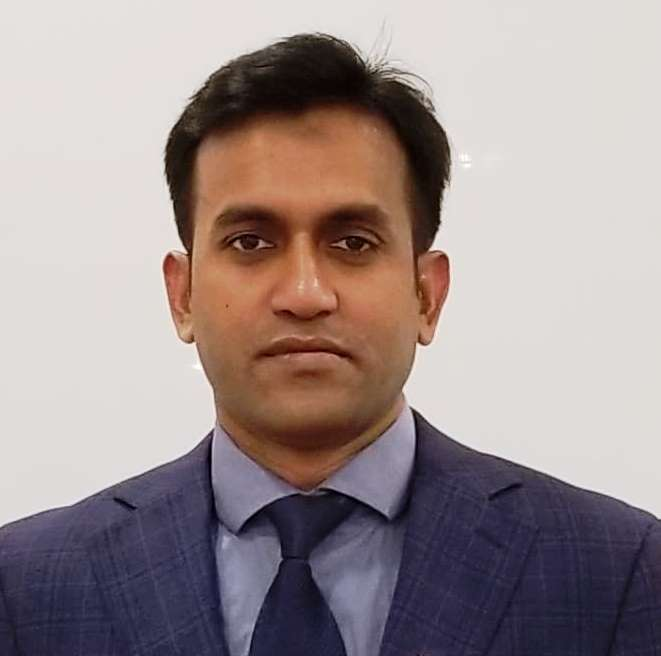
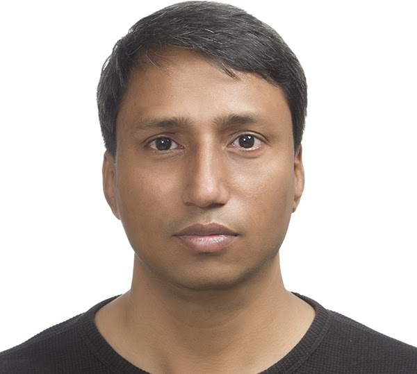
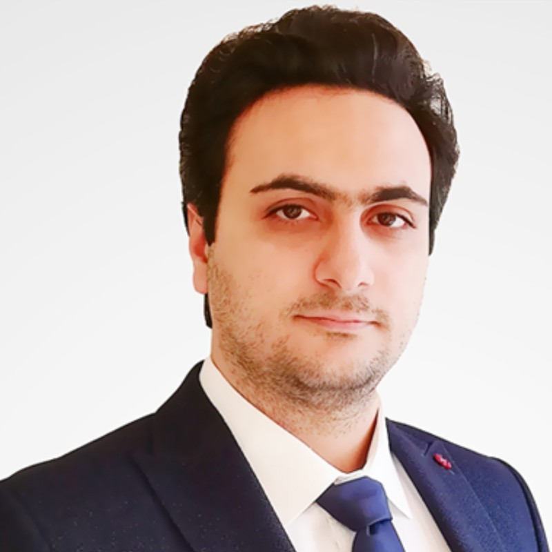
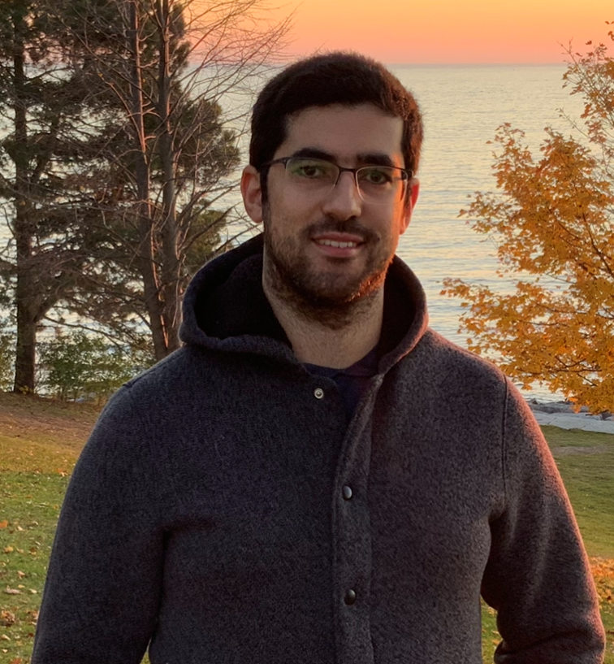
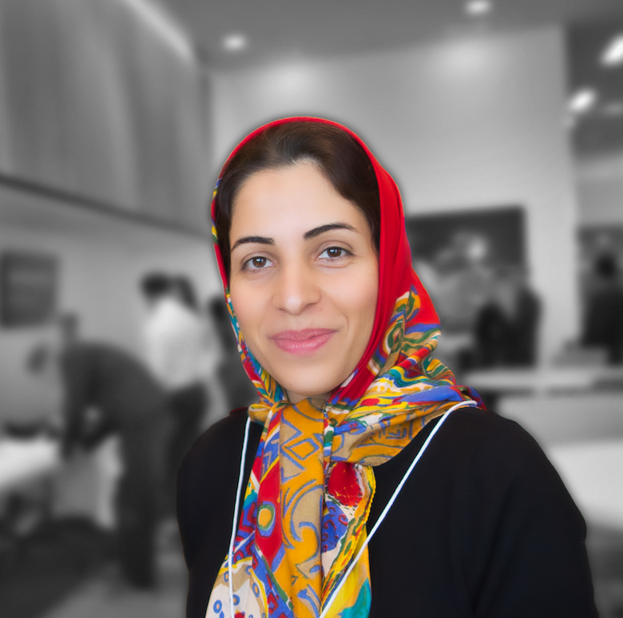
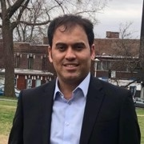

If you have not received the zoom link, please send email to wangsong@yorku.ca to request the zoom link with a copy of your registeration comfirmation
CSER 2020 Fall will be held virtually on November 14th.
Our CSER Fall Workshop seeks to motivate engaging discussions among faculty, graduate students and industry participants about software engineering research in a broad sense.
Margaret-Anne Storey is a Professor of Computer Science and the Co-Director of the Matrix Institute for Applied Data Science at the University of Victoria. She holds a Canada Research Chair in Human and Social Aspects of Software Engineering and is a member of the Royal Society of Canada’s College of New Scholars, Artists and Scientists. She held the Lise Meitner Guest Professorship at Lund University in Sweden from 2016 to 2018, a professorship that promotes gender diversity in science. Together with her students and collaborators, she seeks to understand how software tools, communication media, data visualizations, and social theories can be leveraged to improve how software engineers and knowledge workers explore, understand, analyze and share complex information and knowledge. She has published widely on these topics and collaborates extensively with high-tech companies and non-profit organizations to ensure real-world applicability of her research contributions and tools. Over the past several years, she has collaborated with product teams and researchers at Microsoft to understand developer satisfaction and developer productivity, with the goal of improving their engineering systems and processes.
The Who, What, How of Software Engineering Research
Software engineering is a socio-technical endeavor, and while many of our contributions focus on technical aspects, human stakeholders such as software developers are directly affected by and can benefit from our research and tool innovations. But how much of our research addresses human and social issues, and how do we study human and social aspects in our research designs? In this talk I present the Who-What-How research framework and use the framework to show how there is a need for more diverse research strategies that aim at a deeper understanding of human and social aspects of software development practice to balance the design and evaluation of technical innovations.
Alvin Francis is the Director of Development for Planning and Cognos Analytics at IBM. Prior to IBM, Alvin spent several years in the telecommunications industry where he held various senior leader positions such as Director of Sales, Vice President of Marketing and Product Management and General Manager. He has an MBA from University of Western Ontario Ivey School of Business, a Master of Science in Electrical Engineering from the University of Toronto and undergraduate degrees in Physics, Mathematics and Electrical Engineering from New Mexico State University.
How AI is impacting Software development
The presentation will focus on the intersection of AI and Software development. It will examine how AI can be leveraged in the Software Development Lifecycle and the challenges that data scientists and software developers face to operationalize AI at scale.
| Research Papers | |
|---|---|
| Submission Deadline | Nov 2nd |
| Notification | Nov 6th |
| Registration | Nov 11th |
| Time | Agenda Item | Speaker(s) | Title | |
|---|---|---|---|---|


|
9:00-9:10 AM | Opening Remarks | Sedef Akinli Kocak
Vector Institute Song Wang York University |
|
 |
9:10-10:00 AM | Keynote-I | Margaret-Anne Storey
University of Victoria |
The Who, What, How of Software Engineering Research |
 |
10:00-10:30 AM | New Faculty Talk
(20 mins Talk + 10 mins QA) |
Heng Li
Polytechnique Montréal |
Towards Effective Monitoring of Large-Scale Software Systems |
 |
10:30-11:00 AM | New Faculty Talk | Shurui Zhou
University of Toronto |
Improving Collaboration Efficiency for Distributed and Interdisciplinary Software Teams |
|  | 11:00-11:30 AM | New Faculty Talk | Masud Rahman
Dalhousie University |
Finding Bugs and Features in the Software Code with Better Search Queries |
|  | 11:30-11:50 AM | Research Talk
(15 mins Talk + 5 mins QA) |
Ajay Kumar Jha
University of Alberta |
Annotation practices in Android apps |
|  | 11:50-12:10 AM | Research Talk | Alireza Parvizimosaed
University of Ottawa |
Formal Specifications for Contracts |
| 12:10-1:00 PM | Break | |||
| 1:00-1:50 PM | Keynote-II | Alvin Francis
IBM |
Importance of software development In the age of AI | |
| 1:50-2:20 PM | New Faculty Talk | Gias Uddin
University of Calgary |
Automatic Mining and Summarization of Crowd Sourced Software Knowledge | |
|  | 2:20-2:50 PM | New Faculty Talk | Mohammed Sayagh
ETS - Québec University |
Supporting the creation and operation of multi-component systems |
|  | 2:50-3:10 PM | Research Talk | Fatemeh H. Fard
University of British Columbia. |
Natural Language Processing for Analyzing Mobile App User Feedbacks |
 |
3:10-3:30 PM | Research Talk | Shivashree Subramanian
McGill University. |
Quantifying, Characterizing, and Mitigating Flakily Covered Program Elements |
|  | 3:30-3:50 PM | Research Talk | Nsaer Ezzati-Jivan
Brock University |
Leveraging software observability with social network methods |


|
3:50-4:10 PM | Closing remarks and Announcement |
Hausi Muller
University of Victoria Kelly Lyons University of Toronto Marin Litoiu York University |
Submissions are welcome from across software engineering.
We invite you to contribute by sending your proposals for:Please visit the following form to submit your proposal. Include the following to allow us to prepare a great program:
CSER does not publish proceedings in order to keep presentations informal and speculative.
Due to the COVID-19 pandemics, the CSER 2020 Fall will be run fully virtual, we will post updates on the virtual setup on the conference website.
Dr. François Coallier's office at ÉTS in Montréal has kindly agreed to handle CSER Fall 2020 registration. Please submit your registration using the on-line form. Deadline is Nov 11th. The registration site accepts Visa and MasterCard only.